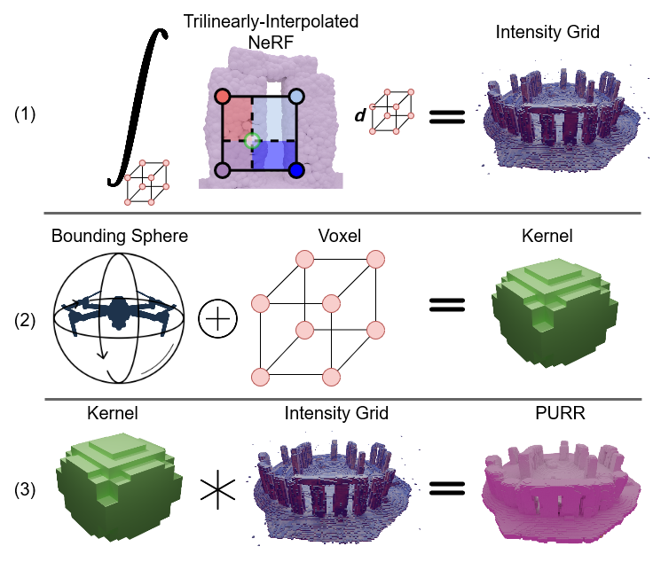
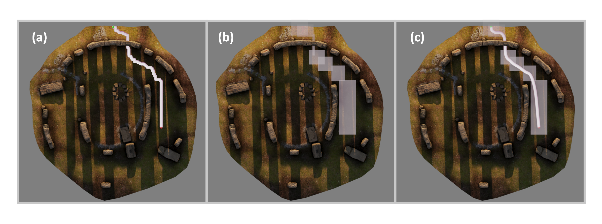

We introduce a transformation of a Neural Radiance Field (NeRF) to an equivalent Poisson Point Process (PPP). This PPP transformation allows for rigorous quantification of uncertainty in NeRFs, in particular, for computing collision probabilities for a robot navigating through a NeRF environment. The PPP is a generalization of a probabilistic occupancy grid to the continuous volume and is fundamental to the volumetric ray-tracing model underlying radiance fields. Building upon this PPP representation, we present a chance-constrained trajectory optimization method for safe robot navigation in NeRFs. Our method relies on a voxel representation called the Probabilistic Unsafe Robot Region (PURR) that spatially fuses the chance constraint with the NeRF model to facilitate fast trajectory optimization. We then combine a graph-based search with a spline-based trajectory optimization to yield robot trajectories through the NeRF that are guaranteed to satisfy a user-specific collision probability. We validate our chance constrained planning method through simulations and hardware experiments, showing superior performance compared to prior works on trajectory planning in NeRF environments.
We equate a Neural Radiance Field (NeRF) to a Poisson Point Process (PPP) by deriving an equivalent rendering equation for the PPP. The derivation is general with respect to the camera parameters. We then propose a probabilistic safety constraint built from the PPP and show that it can be computed solely from the NeRF.

Using probabilistically safe safety constraint, we construct a voxel grid representation of navigable space called an Unsafe Robot Region (PURR). This representation facilitates fast and safe trajectory optimization.
We first plan an initial feasible path through the PURR using a graph-based search like A* (a). Using the A* path as a seed, we grow box corridors around the path until they intersect with the PURR (b). The corridors "convexify" the regions of safe space, which facilitates optimal and fast trajectory optimization (c).
We formulate the planning problem as a quadratic program. Our objective is a rubber-band loss that produces smooth paths, and the constraints are polytopes representing the box segments of the corridor.

Our proposed pipeline produces open-loop trajectories ...
and is fast enough to be used in closed-loop replanning.
@article{chen2024catnips,
author={Chen, Timothy and Culbertson, Preston and Schwager, Mac},
journal={IEEE Transactions on Robotics},
title={CATNIPS: Collision Avoidance Through Neural Implicit Probabilistic Scenes},
year={2024},
volume={40},
number={},
pages={2712-2728},
keywords={Robots;Collision avoidance;Trajectory;Cameras;Probabilistic logic;Planning;Three-dimensional displays;Collision avoidance;neural radiance fields (NeRFs);robot safety;visual-based navigation},
doi={10.1109/TRO.2024.3386394}}